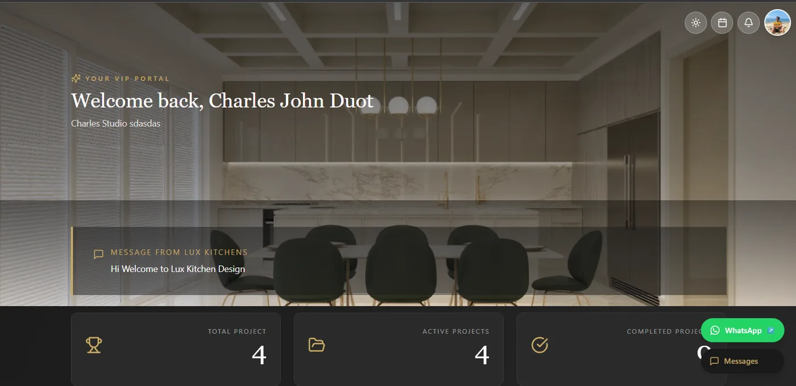
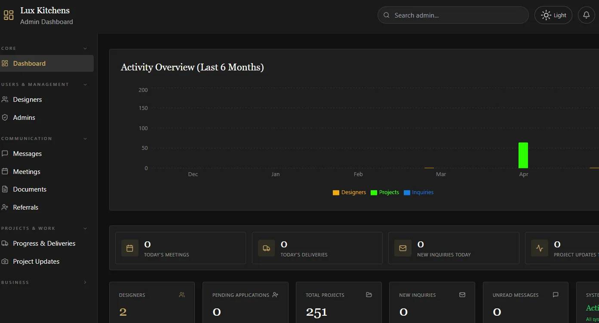

Designer UI
VIP designer portal view with project counts, message area, quick status cards, and direct communication actions.
Website & inquiry automation for a bespoke kitchen and cabinetry studio.
Lux Kitchens is a client project built around a premium public website with lead-capture and inquiry workflows tailored to project consultations. Beyond the public site, designer portal, and admin dashboard, I implemented Supabase-backed data and settings, contact validation, and automated email workflows so every submitted inquiry reaches the right recipient and the customer receives a confirmation.
Improved the reliability of form-to-email data handling by testing submission payloads end to end and ensuring the customer's actual submitted details were used in notifications instead of placeholder information.
Built the client-facing website and portal experience in Base44 and implemented the Supabase data layer and inquiry automation, with emphasis on visual polish, dependable form handling, and a professional first impression.

The preview shows the Lux Kitchens homepage with the brand navigation, hero section, and designer access entry point.
Use the button below to open the actual deployed client website.
Click Here
VIP designer portal view with project counts, message area, quick status cards, and direct communication actions.

Admin dashboard view with activity overview, management navigation, meetings, deliveries, inquiries, messages, and project metrics.